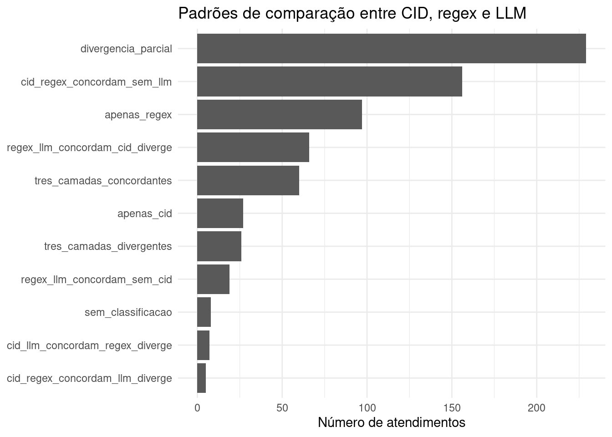
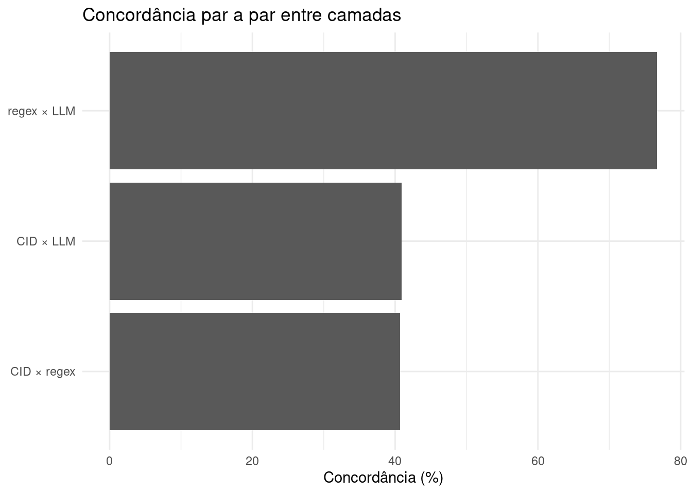

Ver código
source("R/00_pacotes.R")
source("R/04_duckdb.R")
source("R/09_comparacao_camadas.R")source("R/00_pacotes.R")
source("R/04_duckdb.R")
source("R/09_comparacao_camadas.R")Este capítulo compara as três camadas de classificação sindrômica já executadas no pipeline:
CID
regex
LLMA finalidade desta etapa ainda não é definir a classificação final do atendimento. O objetivo é produzir uma leitura auditável sobre convergências, divergências e lacunas entre as fontes de classificação.
A comparação é útil para responder perguntas operacionais e metodológicas, como:
A comparação respeita o desenho geral do pipeline:
CID = camada estruturada
regex = camada textual explícita
LLM = camada textual interpretativaO CID permanece soberano para a etapa posterior de classificação final quando for informativo. Ainda assim, nesta etapa, todas as camadas são mantidas lado a lado para fins de auditoria, validação metodológica e análise de divergência.
Assim, uma divergência entre CID e LLM não significa necessariamente erro. Ela pode indicar:
con <- connect_duckdb()
init_duckdb_schema(con)
atendimentos <- read_atendimentos(con)
classificacao_cid <- read_classificacao_cid(con)
classificacao_regex <- read_classificacao_regex(con)
classificacao_llm <- read_classificacao_llm(con)
list(
atendimentos = nrow(atendimentos),
classificacao_cid = nrow(classificacao_cid),
classificacao_regex = nrow(classificacao_regex),
classificacao_llm = nrow(classificacao_llm)
)$atendimentos
[1] 700
$classificacao_cid
[1] 700
$classificacao_regex
[1] 700
$classificacao_llm
[1] 200A base comparativa reúne, para cada atendimento, a síndrome atribuída por cada camada e indicadores de disponibilidade, concordância e divergência.
comparacao_camadas <- comparar_camadas_classificacao(
atendimentos = atendimentos,
classificacao_cid = classificacao_cid,
classificacao_regex = classificacao_regex,
classificacao_llm = classificacao_llm
)
knitr::kable(
comparacao_camadas |>
dplyr::select(
record_id,
dplyr::any_of(c("cid", "cid_nome")),
sindrome_cid,
sindrome_regex,
sindrome_llm,
n_camadas_classificaram,
padrao_comparacao
) |>
dplyr::slice_head(n = 12),
caption = "Exemplo da base comparativa CID × regex × LLM"
)| record_id | cid | cid_nome | sindrome_cid | sindrome_regex | sindrome_llm | n_camadas_classificaram | padrao_comparacao |
|---|---|---|---|---|---|---|---|
| SYN0001 | B34 | Infecção viral de localização não especificada | febril_inespecifica | febril_hemorragica | febril_hemorragica | 3 | regex_llm_concordam_cid_diverge |
| SYN0002 | A39 | Infecção meningocócica | febril_neurologica_meningea | febril_neurologica_meningea | febril_neurologica_meningea | 3 | tres_camadas_concordantes |
| SYN0003 | B34 | Infecção viral de localização não especificada | febril_inespecifica | febril_exantematica | febril_hemorragica | 3 | tres_camadas_divergentes |
| SYN0004 | A08 | Infecções intestinais virais | febril_gastrointestinal | febril_gastrointestinal | febril_gastrointestinal | 3 | tres_camadas_concordantes |
| SYN0005 | NA | NA | NA | febril_exantematica | febril_exantematica | 2 | regex_llm_concordam_sem_cid |
| SYN0006 | J06 | Infecções agudas das vias aéreas superiores | febril_respiratoria | febril_respiratoria | febril_respiratoria | 3 | tres_camadas_concordantes |
| SYN0007 | A05 | Outras intoxicações alimentares bacterianas | febril_gastrointestinal | febril_neurologica_meningea | febril_gastrointestinal | 3 | cid_llm_concordam_regex_diverge |
| SYN0008 | R50 | Febre de origem desconhecida | febril_inespecifica | febril_hemorragica | febril_hemorragica | 3 | regex_llm_concordam_cid_diverge |
| SYN0009 | J06 | Infecções agudas das vias aéreas superiores | febril_respiratoria | febril_exantematica | febril_exantematica | 3 | regex_llm_concordam_cid_diverge |
| SYN0010 | G03 | Meningite devida a outras causas e a causas não especificadas | febril_neurologica_meningea | febril_neurologica_meningea | febril_neurologica_meningea | 3 | tres_camadas_concordantes |
| SYN0011 | G00 | Meningite bacteriana | febril_neurologica_meningea | febril_neurologica_meningea | febril_neurologica_meningea | 3 | tres_camadas_concordantes |
| SYN0012 | NA | NA | NA | febril_exantematica | febril_hemorragica | 2 | divergencia_parcial |
A tabela a seguir resume os principais padrões encontrados entre as três camadas.
resumo_padroes <- summarise_comparacao_camadas(comparacao_camadas)
knitr::kable(
resumo_padroes,
caption = "Padrões de comparação entre CID, regex e LLM"
)| padrao_comparacao | n | percentual |
|---|---|---|
| divergencia_parcial | 229 | 32.7 |
| cid_regex_concordam_sem_llm | 156 | 22.3 |
| apenas_regex | 97 | 13.9 |
| regex_llm_concordam_cid_diverge | 66 | 9.4 |
| tres_camadas_concordantes | 60 | 8.6 |
| apenas_cid | 27 | 3.9 |
| tres_camadas_divergentes | 26 | 3.7 |
| regex_llm_concordam_sem_cid | 19 | 2.7 |
| sem_classificacao | 8 | 1.1 |
| cid_llm_concordam_regex_diverge | 7 | 1.0 |
| cid_regex_concordam_llm_diverge | 5 | 0.7 |
plot_padroes_comparacao(comparacao_camadas)
Nem todas as camadas classificam todos os atendimentos. Em especial, a camada CID depende de um código informativo; a regex depende da presença textual explícita de febre e sintomas; e a LLM pode retornar nao_classificado quando o texto não sustenta uma síndrome febril.
knitr::kable(
summarise_camadas_disponiveis(comparacao_camadas),
caption = "Disponibilidade de classificação por camada"
)| camada | n_classificados | total | percentual |
|---|---|---|---|
| CID | 570 | 700 | 81.4 |
| regex | 665 | 700 | 95.0 |
| LLM | 189 | 700 | 27.0 |
A concordância par a par é calculada apenas entre registros comparáveis, isto é, registros nos quais as duas camadas em questão produziram uma classificação válida.
concordancia_par_a_par <- summarise_concordancia_par_a_par(comparacao_camadas)
knitr::kable(
concordancia_par_a_par,
caption = "Concordância entre camadas, considerando apenas registros comparáveis"
)| par | n_comparavel | n_concordante | percentual_concordancia |
|---|---|---|---|
| CID × regex | 543 | 221 | 40.7 |
| CID × LLM | 164 | 67 | 40.9 |
| regex × LLM | 189 | 145 | 76.7 |
plot_concordancia_par_a_par(comparacao_camadas)
A matriz abaixo permite observar como a camada LLM se distribui dentro de cada classificação por CID. Essa análise é especialmente útil para identificar síndromes em que o texto clínico frequentemente não acompanha a hipótese codificada.
matriz_cid_llm <- summarise_matriz_cid_llm(comparacao_camadas)
knitr::kable(
matriz_cid_llm |>
dplyr::slice_head(n = 30),
caption = "Matriz de comparação CID × LLM"
)| sindrome_cid | sindrome_llm | n | percentual_linha |
|---|---|---|---|
| febril_exantematica | febril_hemorragica | 18 | 62.1 |
| febril_exantematica | febril_exantematica | 10 | 34.5 |
| febril_exantematica | febril_gastrointestinal | 1 | 3.4 |
| febril_gastrointestinal | febril_gastrointestinal | 27 | 73.0 |
| febril_gastrointestinal | febril_hemorragica | 9 | 24.3 |
| febril_gastrointestinal | febril_inespecifica | 1 | 2.7 |
| febril_hemorragica | febril_ictero_hemorragica | 4 | 50.0 |
| febril_hemorragica | febril_hemorragica | 2 | 25.0 |
| febril_hemorragica | febril_exantematica | 1 | 12.5 |
| febril_hemorragica | febril_inespecifica | 1 | 12.5 |
| febril_ictero_hemorragica | febril_hemorragica | 2 | 33.3 |
| febril_ictero_hemorragica | febril_exantematica | 1 | 16.7 |
| febril_ictero_hemorragica | febril_gastrointestinal | 1 | 16.7 |
| febril_ictero_hemorragica | febril_inespecifica | 1 | 16.7 |
| febril_ictero_hemorragica | febril_neurologica_meningea | 1 | 16.7 |
| febril_inespecifica | febril_hemorragica | 17 | 54.8 |
| febril_inespecifica | febril_inespecifica | 9 | 29.0 |
| febril_inespecifica | febril_exantematica | 5 | 16.1 |
| febril_neurologica_meningea | febril_neurologica_meningea | 12 | 66.7 |
| febril_neurologica_meningea | febril_exantematica | 4 | 22.2 |
| febril_neurologica_meningea | febril_hemorragica | 2 | 11.1 |
| febril_respiratoria | febril_exantematica | 20 | 57.1 |
| febril_respiratoria | febril_hemorragica | 8 | 22.9 |
| febril_respiratoria | febril_respiratoria | 7 | 20.0 |
A comparação entre regex e LLM é uma comparação entre duas leituras textuais. A regex captura padrões explícitos; a LLM interpreta o texto de forma mais flexível, mas também pode ser mais sensível a ambiguidades.
matriz_regex_llm <- summarise_matriz_regex_llm(comparacao_camadas)
knitr::kable(
matriz_regex_llm |>
dplyr::slice_head(n = 30),
caption = "Matriz de comparação regex × LLM"
)| sindrome_regex | sindrome_llm | n | percentual_linha |
|---|---|---|---|
| febril_exantematica | febril_exantematica | 49 | 62.0 |
| febril_exantematica | febril_hemorragica | 30 | 38.0 |
| febril_gastrointestinal | febril_gastrointestinal | 24 | 100.0 |
| febril_hemorragica | febril_hemorragica | 32 | 100.0 |
| febril_ictero_hemorragica | febril_ictero_hemorragica | 5 | 55.6 |
| febril_ictero_hemorragica | febril_gastrointestinal | 2 | 22.2 |
| febril_ictero_hemorragica | febril_inespecifica | 2 | 22.2 |
| febril_inespecifica | febril_inespecifica | 13 | 100.0 |
| febril_neurologica_meningea | febril_neurologica_meningea | 13 | 56.5 |
| febril_neurologica_meningea | febril_gastrointestinal | 8 | 34.8 |
| febril_neurologica_meningea | febril_exantematica | 2 | 8.7 |
| febril_respiratoria | febril_respiratoria | 9 | 100.0 |
Para fins de revisão manual, são especialmente importantes os registros com CID informativo em que ao menos uma camada textual aponta outra síndrome, bem como os casos em que regex e LLM divergem entre si.
resumo_divergencias <- tibble::tibble(
indicador = c(
"Divergência com CID informativo",
"Divergência textual regex × LLM",
"Três camadas divergentes"
),
n = c(
sum(comparacao_camadas$divergencia_com_cid_informativo, na.rm = TRUE),
sum(comparacao_camadas$divergencia_textual_regex_llm, na.rm = TRUE),
sum(comparacao_camadas$padrao_comparacao == "tres_camadas_divergentes", na.rm = TRUE)
)
) |>
dplyr::mutate(percentual = round(100 * .data$n / nrow(comparacao_camadas), 1))
knitr::kable(
resumo_divergencias,
caption = "Indicadores de divergência para auditoria"
)| indicador | n | percentual |
|---|---|---|
| Divergência com CID informativo | 327 | 46.7 |
| Divergência textual regex × LLM | 44 | 6.3 |
| Três camadas divergentes | 26 | 3.7 |
amostra_auditoria <- selecionar_amostra_auditoria(
comparacao = comparacao_camadas,
n = 20
)
knitr::kable(
amostra_auditoria |>
dplyr::select(
record_id,
dplyr::any_of(c("cid", "cid_nome")),
sindrome_cid,
sindrome_regex,
sindrome_llm,
padrao_comparacao,
divergencia_com_cid_informativo,
divergencia_textual_regex_llm,
justificativa_llm
),
caption = "Amostra de registros para auditoria da comparação entre camadas"
)| record_id | cid | cid_nome | sindrome_cid | sindrome_regex | sindrome_llm | padrao_comparacao | divergencia_com_cid_informativo | divergencia_textual_regex_llm | justificativa_llm |
|---|---|---|---|---|---|---|---|---|---|
| SYN0001 | B34 | Infecção viral de localização não especificada | febril_inespecifica | febril_hemorragica | febril_hemorragica | regex_llm_concordam_cid_diverge | TRUE | FALSE | Texto menciona febre, sintomas respiratórios, sintomas gastrointestinais, sangramento, sintomas inespecíficos, compatível com febril_hemorragica. |
| SYN0003 | B34 | Infecção viral de localização não especificada | febril_inespecifica | febril_exantematica | febril_hemorragica | tres_camadas_divergentes | TRUE | TRUE | Texto menciona febre, exantema/manchas, sintomas gastrointestinais, sangramento, sintomas inespecíficos, compatível com febril_hemorragica. |
| SYN0007 | A05 | Outras intoxicações alimentares bacterianas | febril_gastrointestinal | febril_neurologica_meningea | febril_gastrointestinal | cid_llm_concordam_regex_diverge | TRUE | TRUE | Texto menciona febre, sintomas gastrointestinais, compatível com febril_gastrointestinal. |
| SYN0008 | R50 | Febre de origem desconhecida | febril_inespecifica | febril_hemorragica | febril_hemorragica | regex_llm_concordam_cid_diverge | TRUE | FALSE | Texto menciona febre, sintomas respiratórios, sintomas gastrointestinais, sangramento, sintomas inespecíficos, compatível com febril_hemorragica. |
| SYN0009 | J06 | Infecções agudas das vias aéreas superiores | febril_respiratoria | febril_exantematica | febril_exantematica | regex_llm_concordam_cid_diverge | TRUE | FALSE | Texto menciona febre, sintomas respiratórios, exantema/manchas, sintomas gastrointestinais, sintomas inespecíficos, compatível com febril_exantematica. |
| SYN0013 | B15 | Hepatite aguda A | febril_ictero_hemorragica | febril_hemorragica | febril_hemorragica | regex_llm_concordam_cid_diverge | TRUE | FALSE | Texto menciona febre, exantema/manchas, sangramento, sintomas inespecíficos, compatível com febril_hemorragica. |
| SYN0017 | A08 | Infecções intestinais virais | febril_gastrointestinal | febril_exantematica | febril_hemorragica | tres_camadas_divergentes | TRUE | TRUE | Texto menciona febre, sintomas respiratórios, exantema/manchas, sintomas gastrointestinais, sangramento, compatível com febril_hemorragica. |
| SYN0018 | A08 | Infecções intestinais virais | febril_gastrointestinal | febril_neurologica_meningea | febril_gastrointestinal | cid_llm_concordam_regex_diverge | TRUE | TRUE | Texto menciona febre, sintomas gastrointestinais, compatível com febril_gastrointestinal. |
| SYN0019 | J10 | Influenza devida a outro vírus identificado | febril_respiratoria | febril_exantematica | febril_exantematica | regex_llm_concordam_cid_diverge | TRUE | FALSE | Texto menciona febre, sintomas respiratórios, exantema/manchas, sintomas gastrointestinais, sintomas inespecíficos, compatível com febril_exantematica. |
| SYN0020 | R50 | Febre de origem desconhecida | febril_inespecifica | febril_exantematica | febril_exantematica | regex_llm_concordam_cid_diverge | TRUE | FALSE | Texto menciona febre, sintomas respiratórios, exantema/manchas, sintomas inespecíficos, compatível com febril_exantematica. |
| SYN0021 | J11 | Influenza devida a vírus não identificado | febril_respiratoria | febril_exantematica | febril_exantematica | regex_llm_concordam_cid_diverge | TRUE | FALSE | Texto menciona febre, sintomas respiratórios, exantema/manchas, sintomas gastrointestinais, compatível com febril_exantematica. |
| SYN0023 | B34 | Infecção viral de localização não especificada | febril_inespecifica | febril_exantematica | febril_hemorragica | tres_camadas_divergentes | TRUE | TRUE | Texto menciona febre, exantema/manchas, sintomas gastrointestinais, sangramento, sintomas inespecíficos, compatível com febril_hemorragica. |
| SYN0026 | A08 | Infecções intestinais virais | febril_gastrointestinal | febril_neurologica_meningea | febril_gastrointestinal | cid_llm_concordam_regex_diverge | TRUE | TRUE | Texto menciona febre, sintomas gastrointestinais, compatível com febril_gastrointestinal. |
| SYN0028 | A91 | Febre hemorrágica devida ao vírus da dengue | febril_hemorragica | febril_exantematica | febril_exantematica | regex_llm_concordam_cid_diverge | TRUE | FALSE | Texto menciona febre, exantema/manchas, compatível com febril_exantematica. |
| SYN0030 | A09 | Diarreia e gastroenterite de origem infecciosa presumível | febril_gastrointestinal | febril_neurologica_meningea | febril_gastrointestinal | cid_llm_concordam_regex_diverge | TRUE | TRUE | Texto menciona febre, sintomas gastrointestinais, compatível com febril_gastrointestinal. |
| SYN0034 | A08 | Infecções intestinais virais | febril_gastrointestinal | febril_neurologica_meningea | febril_gastrointestinal | cid_llm_concordam_regex_diverge | TRUE | TRUE | Texto menciona febre, sintomas gastrointestinais, compatível com febril_gastrointestinal. |
| SYN0038 | B34 | Infecção viral de localização não especificada | febril_inespecifica | febril_exantematica | febril_hemorragica | tres_camadas_divergentes | TRUE | TRUE | Texto menciona febre, exantema/manchas, sintomas gastrointestinais, sangramento, sintomas inespecíficos, compatível com febril_hemorragica. |
| SYN0039 | A08 | Infecções intestinais virais | febril_gastrointestinal | febril_exantematica | febril_hemorragica | tres_camadas_divergentes | TRUE | TRUE | Texto menciona febre, sintomas respiratórios, exantema/manchas, sintomas gastrointestinais, sangramento, compatível com febril_hemorragica. |
| SYN0040 | J11 | Influenza devida a vírus não identificado | febril_respiratoria | febril_exantematica | febril_hemorragica | tres_camadas_divergentes | TRUE | TRUE | Texto menciona febre, sintomas respiratórios, exantema/manchas, sintomas gastrointestinais, sangramento, compatível com febril_hemorragica. |
| SYN0042 | B34 | Infecção viral de localização não especificada | febril_inespecifica | febril_hemorragica | febril_hemorragica | regex_llm_concordam_cid_diverge | TRUE | FALSE | Texto menciona febre, sintomas respiratórios, sintomas gastrointestinais, sangramento, sintomas inespecíficos, compatível com febril_hemorragica. |
A base de comparação é persistida no DuckDB para permitir auditoria posterior e uso nos próximos capítulos.
write_comparacao_camadas(
con = con,
dados = comparacao_camadas,
overwrite = TRUE
)
write_execution_log(
con = con,
etapa = "comparacao_cid_regex_llm",
n_registros = nrow(comparacao_camadas),
observacao = "Comparação entre camadas CID, regex e LLM."
)
knitr::kable(
duckdb_counts(con),
caption = "Tabelas persistidas no DuckDB após a comparação entre camadas"
)| tabela | n |
|---|---|
| tb_atendimentos | 700 |
| tb_classificacao_cid | 700 |
| tb_classificacao_final | 700 |
| tb_classificacao_llm | 200 |
| tb_classificacao_regex | 700 |
| tb_comparacao_camadas | 700 |
| tb_execucoes | 158 |
A comparação entre camadas deve ser interpretada como uma etapa de diagnóstico do pipeline. Registros convergentes indicam maior estabilidade operacional entre fontes distintas de informação. Registros divergentes, por outro lado, não devem ser automaticamente tratados como erro: eles apontam situações que exigem revisão metodológica ou clínica.
Para a próxima etapa, a base tb_comparacao_camadas servirá de entrada para a classificação final. Nessa etapa posterior, a regra já definida será aplicada: quando o CID for informativo, ele será respeitado; quando estiver ausente ou não informativo, as camadas textuais poderão apoiar a classificação.
DBI::dbDisconnect(con, shutdown = TRUE)